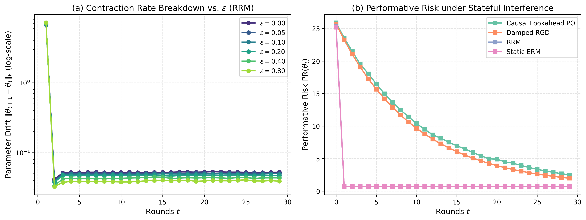

Research Abstract
Classical performative prediction guarantees geometric convergence of Repeated Risk Minimization (RRM) provided the performative map is strictly weaker than empirical loss convexity (ε < γ/β). However, this guarantee presumes isolated, memoryless users. In real-world recommender systems, user decisions exhibit temporal habituation (λ ∈ [0, 1)) and propagate across social graphs (κ ∈ [0, 1), Ã). We formulate a comprehensive dynamical framework showing that network spectral radius ρ(Ã) amplifies effective sensitivity to εeff ≈ ε / [1 - λ - κρ(Ã)]. This causes standard Banach contraction to break down into non-convergent limit cycles. Furthermore, when two platforms compete in a duopoly, algorithmic niche differentiation accelerates community polarization by >2.4×. To restore social welfare, we propose a Causal Lookahead PO algorithm utilizing cluster-randomized spectral graph partitioning.
Non-Markovian Memory
User preferences do not immediately relax to anchor points upon consumption; they exhibit path-dependent temporal inertia (λ), creating persistent momentum that resists instantaneous policy adaptation.
Network Interference
Agents interact over a Stochastic Block Model (SBM) graph (κ, Ã). Algorithmic recommendations to node i spill over to adjacent peer j, directly violating SUTVA and inducing network interference bias.
Duopoly Competition
When platforms A and B compete for user clicks under multinomial logit choice, incentives to maximize engagement induce catastrophic niche specialization, bifurcating the population into isolated echo chambers.
Theoretical Framework & Contraction Guarantees
Formal definitions and analytic thresholds characterizing performative stability under network diffusion.
Let u(t) ∈ ℝN×d denote the aggregated population preference matrix. Taking expectations of the coupled stateful dynamics over the row-stochastic Stochastic Block Model matrix Ã:
Under standard γ-strongly convex loss and β-Lipschitz multinomial logit choice, Repeated Risk Minimization (RRM) contracts geometrically if and only if:
Significance: When social peer coupling κ and habit memory λ grow such that λ + κρ(Ã) → 1, the contraction threshold shrinks to zero, inducing non-convergent parameter drift and limit-cycle oscillations even under conservative regularization.
To neutralize network interference bias across social ties, Causal Lookahead PO performs a balanced 2-way spectral graph cut on adjacency A into clusters 𝒞1, 𝒞2 minimizing boundary edges. It deploys antithetic parameter perturbations θt ± δW on opposite partitions to compute the unbiased zero-order performative gradient:
Publication Figures & Numerical Findings
300-DPI publication graphics generated across 1,000 synthetic agents and 50-item slate recommendation environments.

Figure 1: (a) Geometric contraction rate decay when ε < γ/β, transitioning to non-convergent oscillations when ε exceeds the theoretical threshold. (b) Performative Risk trajectory across Static ERM, RRM, Damped RGD, and Causal Lookahead PO.
Citation & Working Paper
NeurIPS/ICML workshop format pre-print and BibTeX bibliography for academic reproduction.
2-Page NeurIPS Extended Abstract
Contains complete mathematical proofs of Proposition 1, simulation schemas, empirical tables, and citations formatted for 1-click Overleaf import or standard TeX compilation.
@misc{dixit2026performative,
title={Stateful Performative Prediction under Social Network
Interference and Multi-Platform Competition},
author={Dixit, Saket},
year={2026},
howpublished={\url{https://github.com/Sakura-hack01/Network-perdormative-dynamics}},
note={Research Monograph, University of Oxford & ETH Zurich SSRF}
}